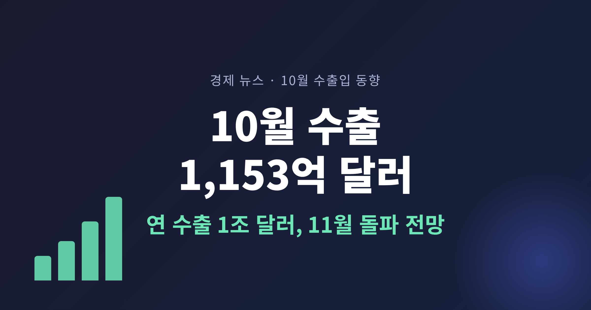
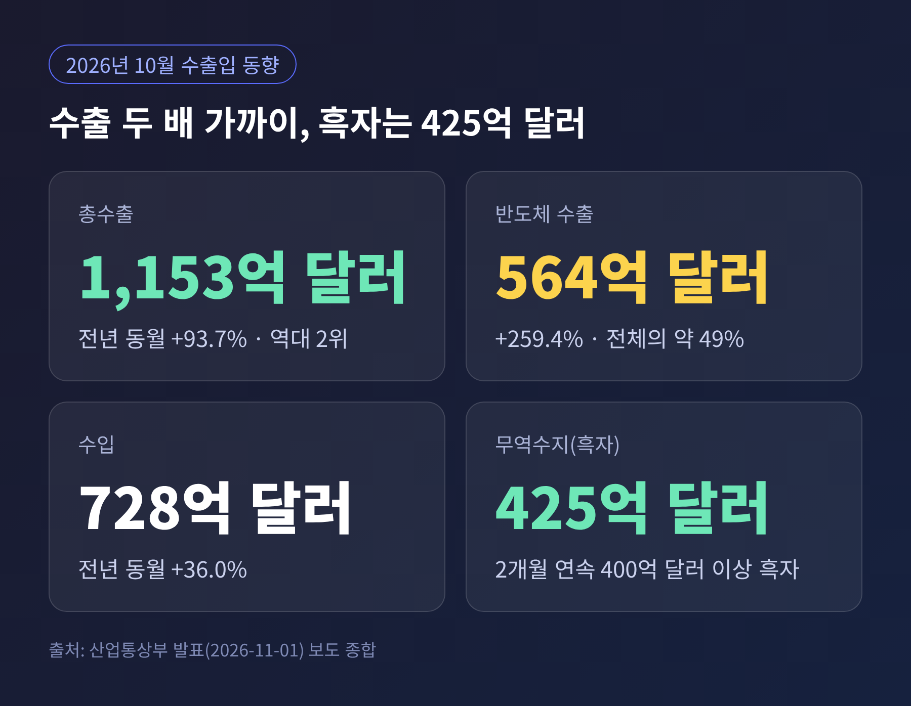
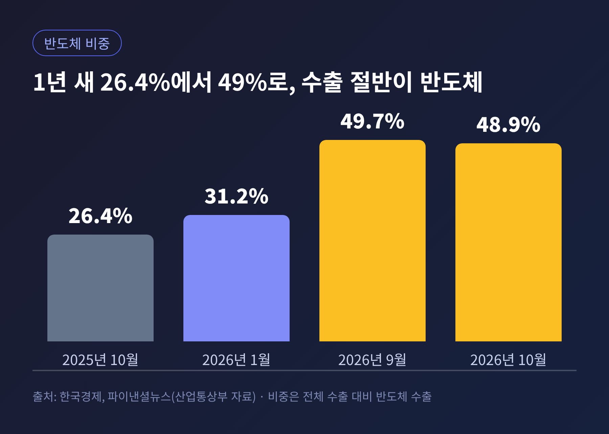
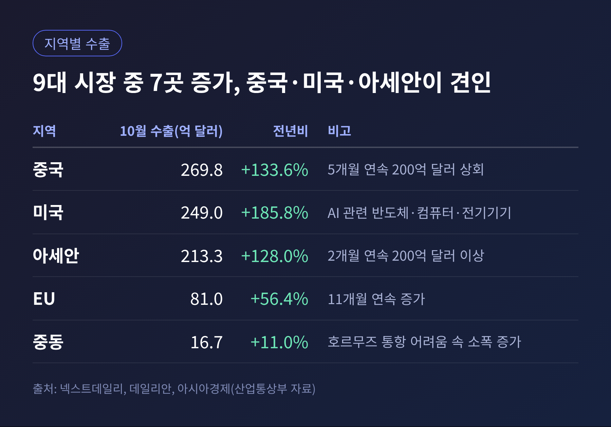
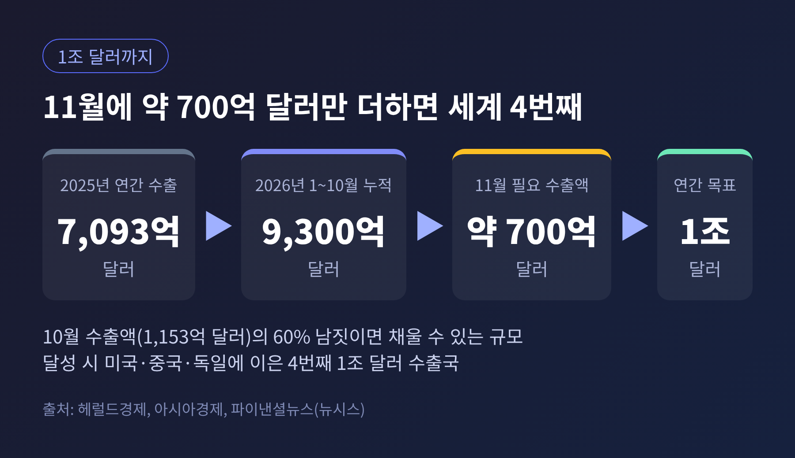
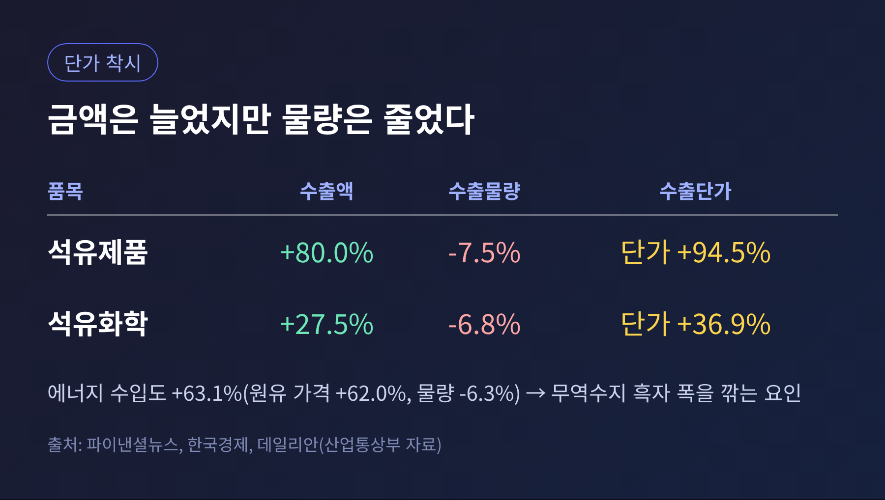
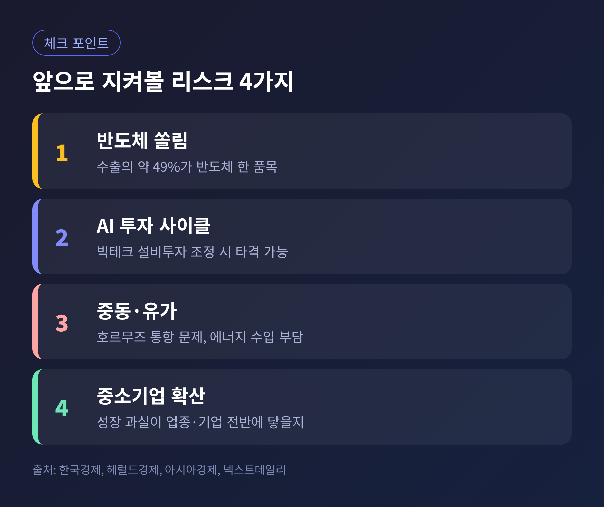

3줄 요약
오늘은 11월 1일 발표된 10월 수출입 동향을 정리해 보려 합니다.
수출이 얼마나 늘었는지, 그 숫자가 왜 중요한지, 그리고 어디를 조심해서 읽어야 하는지 차례로 살펴보겠습니다.

산업통상부에 따르면 10월 수출은 1,152억 8,000만 달러였습니다.
전년 같은 달보다 93.7% 늘어난 금액입니다.
9월에 이어 두 달 연속 1,100억 달러를 넘겼고, 월간 기준으로는 역대 두 번째입니다. 1위는 1,211억 달러를 기록한 9월입니다.
수입은 727억 8,000만 달러로 36.0% 늘었습니다.
그 결과 무역수지는 425억 달러 흑자였고, 두 달 연속 400억 달러를 웃돌았습니다.
조업일수를 감안한 일평균 수출은 52억 4,000만 달러로 76% 늘었습니다.
20대 주력 품목 가운데 18개가 증가했습니다.
1~10월 누적 수출은 약 9,300억 달러입니다. 지난해 연간 수출액 7,093억 달러를 이미 넘어섰습니다.
누적 무역흑자도 2,949억 달러로, 전년 같은 기간보다 2,391억 달러 늘었습니다.
뉴시스 보도에 따르면 이는 종전 연간 최대 흑자였던 2017년의 952억 달러를 이미 웃도는 규모이고, 월간 흑자는 21개월째 이어졌습니다.
이번 달 숫자의 주인공은 반도체입니다.
10월 반도체 수출은 564억 4,000만 달러로 259.4% 급증했습니다. 전체 수출에서 차지하는 비중은 약 49%입니다.
1년 전 26.4%였던 비중이 22.6%포인트 올라갔습니다.
예전엔 반도체가 수출의 4분의 1 남짓을 맡았습니다. 지금은 두 달 연속 절반에 가깝습니다.
한국경제 보도에 따르면 비중은 1월 31.2%에서 9월 49.7%, 10월 48.9%로 이어졌습니다.

품목을 더 들여다보면 메모리의 힘이 큽니다.
메모리 수출은 501억 4,000만 달러로 360.5% 늘었고, 반도체 수출의 88.8%를 차지했습니다. 시스템반도체는 57억 1,000만 달러, 32.6% 증가에 그쳤습니다.
배경에는 글로벌 빅테크의 AI 인프라 투자가 있습니다.
AI 서버용 SSD가 포함된 컴퓨터 수출은 58억 5,000만 달러로 496.6% 늘었고, 데이터센터 수요를 탄 전기기기는 19억 9,000만 달러로 월간 최대를 새로 썼습니다.
가격도 한몫했습니다.
한국경제는 DDR5(16Gb) 고정거래가격이 6월 40.0달러에서 10월 50.0달러로 올랐다고 전했습니다. 물량뿐 아니라 단가가 수출액을 밀어 올린 셈입니다.
지역별로는 9대 시장 가운데 7곳에서 수출이 늘었습니다.

중국은 269억 8,000만 달러로 5개월 연속 200억 달러를 넘었습니다.
미국은 249억 달러, 185.8% 증가했습니다. 반도체와 컴퓨터, 전기기기 같은 AI 관련 품목이 이끌었고 자동차와 철강도 보탰습니다.
아세안은 213억 3,000만 달러로 두 달 연속 200억 달러 선을 지켰습니다.
중동은 호르무즈 해협 통항이 어려운 가운데에도 11.0% 늘었습니다.
다만 중동 정세 불안 속에서 중고차 수출은 52.2% 줄었습니다.
1~10월 누적 수출이 9,300억 달러이니, 1조 달러까지는 약 700억 달러가 남았습니다.
10월 한 달 수출액의 60% 남짓이면 채울 수 있는 규모입니다.
김정관 산업통상부 장관은 "11월 중 연 수출 1조 달러 달성이 확실시되고 있다"고 밝혔습니다.
이렇게 되면 한국은 미국, 중국, 독일에 이어 세계에서 네 번째로 연간 수출 1조 달러를 넘는 나라가 됩니다.
이재명 대통령도 엑스(X)에 "기업인과 생산현장의 노동자 여러분 수고 많으셨고 감사드린다"는 글을 남겼습니다.

숫자의 상징성도 있지만, 실제 의미는 따로 있습니다.
수출은 기업 실적과 일자리, 외화 수입으로 이어지는 출발점입니다. 무역흑자가 쌓이면 대외 지급 여력이 커지는 효과도 기대됩니다.
다만 이 해석은 필자의 정리일 뿐, 이번 발표에서 정부가 직접 밝힌 내용은 아닙니다.
좋은 소식만 있는 것은 아닙니다. 짚어 둘 점이 세 가지 있습니다.
첫째, 쏠림입니다.
반도체를 뺀 수출도 34% 늘었으니 나머지 산업이 멈춘 것은 아닙니다. 하지만 반도체가 259.4% 늘 때 나머지는 34% 늘었으니, 증가 속도의 차이는 분명합니다.
반도체 한 품목이 흔들리면 전체 숫자가 함께 흔들리는 구조라는 뜻입니다.
한국경제는 AI 투자 사이클이 꺾이거나 빅테크가 설비투자를 조정하면 수출에 큰 타격이 올 수 있다고 지적했습니다.
둘째, 단가 착시입니다.

석유제품 수출액은 80.0% 늘었지만 물량은 7.5% 줄었습니다. 석유화학도 금액은 27.5% 늘고 물량은 6.8% 줄었습니다.
유가 상승이 금액을 키운 것이지, 많이 팔아서 늘어난 것은 아닙니다.
같은 이유로 에너지 수입은 63.1% 늘었고, 이는 무역수지 흑자 폭을 깎는 요인입니다.
셋째, 일시적 요인입니다.
자동차 수출이 65억 5,000만 달러로 18.1% 늘었지만, 추석 연휴가 지난해 10월에서 올해 9월로 옮겨 조업일수가 늘어난 영향이 섞여 있습니다.
선박은 지난해 대형 해양플랜트 수출의 기저효과로 43.6% 줄었습니다.
김 장관은 다수의 중소·중견기업이 자국우선주의와 공급망 재편, 중동 지정학 불안으로 어려움을 겪고 있다고 짚었습니다.
정부는 주요국과 통상 협력을 강화하고 수출 애로를 풀어 성장의 과실을 나누겠다는 입장입니다.
헤럴드경제도 수출 호조를 중소·중견기업으로 넓히는 일이 숙제라고 짚었습니다.
반도체 대기업이 끌고 가는 성장이 협력사와 다른 업종의 체감으로 이어질지는 아직 지켜볼 대목입니다.

11월 구체적인 수출 전망치는 이번 자료에 나오지 않았습니다.
월 중순에 나오는 11월 1~10일 잠정치가 첫 확인 지점이 될 것입니다. 연간 1조 달러 달성은 이르면 11월 중하순에 확정될 것으로 보입니다.
정리하면 이렇습니다.
10월 수출은 기록적이었지만, 그 기록의 절반은 반도체 한 품목이 썼습니다.
"1조 달러보다 중요한 것은, 그 수출이 어디서 오느냐입니다."
다음 달 1조 달러 돌파 소식이 나온다면, 축하와 함께 반도체 밖의 수출이 얼마나 단단해졌는지도 함께 확인해 보시길 권합니다.
본 글은 정보 제공을 위한 해설이며 투자 권유가 아닙니다. 투자 판단과 그에 따른 책임은 투자자 본인에게 있습니다.
출처: 산업통상부 발표를 보도한 뉴스핌, 헤럴드경제, 파이낸셜뉴스, 한국경제, 아시아경제, 데일리안, 넥스트데일리, 뉴스1 등 (2026-11-01).